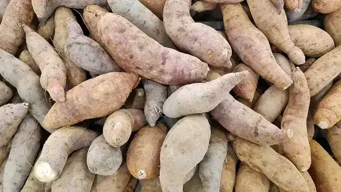

The evidence
The sweet potato is native to the Americas, and it was cultivated in Polynesia before European contact. The word for it in several Polynesian languages resembles a Quechua term, and a 2020 genetic study found that the Polynesian varieties came from a single introduction from South America.
Maps, diagrams and images


The route
Polynesian voyagers reaching South America and returning is the leading explanation, and it fits the evidence for Polynesian seafaring. A 2024 study of Polynesian genomes also found an ancient signal consistent with contact with South American peoples.
The archive files it as documented because the crop and the genetics are both evidence.
Documented: the crop's American origin.
Documented: its pre-European presence in Polynesia.
Documented: the genetic single introduction.
Supported: Polynesian contact.
The label: documented.
Why it is in the archive
Because it is pre-Columbian contact proven by a vegetable.
Open resources on this topic
- PapersOpen-access articles: DOAJ · PubMed Central · Internet Archive Scholar
- BooksPublic-domain and borrowable copies: Open Library · Project Gutenberg · Google Books · Internet Archive
Cite this page
Momin, S. (2026). Sweet Potatoes Crossed the Pacific. The Larger World Archive. https://drsamonline.github.io/LARGE_GLOBE/sweet-potato-pacific.htmlMomin, Sohil. “Sweet Potatoes Crossed the Pacific.” The Larger World Archive, 2026, https://drsamonline.github.io/LARGE_GLOBE/sweet-potato-pacific.html.Momin, Sohil. “Sweet Potatoes Crossed the Pacific.” The Larger World Archive, 2026. https://drsamonline.github.io/LARGE_GLOBE/sweet-potato-pacific.html.@misc{sweet2026sweet,
author = {Momin, Sohil},
title = {Sweet Potatoes Crossed the Pacific},
year = {2026},
howpublished = {The Larger World Archive},
url = {https://drsamonline.github.io/LARGE_GLOBE/sweet-potato-pacific.html},
note = {Last reviewed 20 November 2026}
}Last reviewed 20 November 2026 · Corrections policy · this page is not peer reviewed
What the plant's distribution implies
The sweet potato is native to South America and was being grown across Polynesia before European contact, which requires an explanation. The leading one is that Polynesian voyagers reached the American coast and returned with the plant.
The genetics support a single introduction from South America, and the linguistic and archaeological evidence points the same way. The archive keeps the page because it is a case where a plant did the work that a document could not — evidence of contact that no one wrote down.
Sources for this page
- Wikipedia, “Sweet potato” — the cropen.wikipedia.org
- Wikipedia, “Pre-Columbian trans-oceanic contact” — the categoryen.wikipedia.org
- Wikipedia, “Polynesian navigation” — the capabilityen.wikipedia.org
- Wikipedia, “Genetic history of Polynesia” — the evidenceen.wikipedia.org